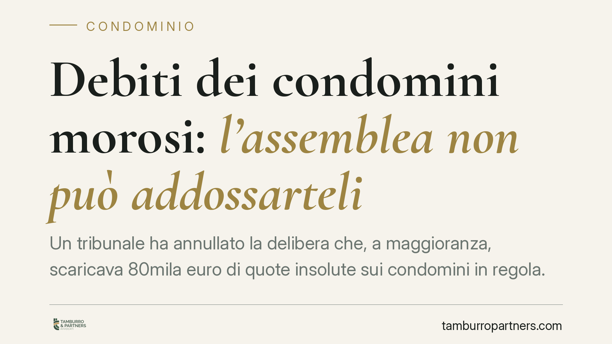

Debiti dei condomini morosi: l'assemblea non può addossarteli
Un tribunale ha annullato la delibera che, a maggioranza, scaricava 80mila euro di quote insolute sui condomini in regola. La ripartizione delle spese segue criteri legali inderogabili senza il consenso di tutti: capire quando una decisione assembleare è viziata, e come reagire nei termini, fa la differenza tra subire un esborso indebito e difendere la propria posizione.

Il caso
Un condominio si trova con circa 80mila euro di quote non pagate da alcuni proprietari morosi. L'assemblea, a maggioranza, decide la soluzione più rapida: ripartire quel debito tra tutti gli altri condomini, così da coprire subito l'ammanco. Due società proprietarie di unità immobiliari impugnano la delibera.
Secondo la pronuncia segnalata (Tribunale di Vicenza), la delibera è illegittima: non si possono spostare a maggioranza gli oneri dei morosi sulle spalle di chi ha pagato. Nota redazionale: gli estremi della sentenza (numero e anno) sono in corso di verifica; l'anno indicato dalla fonte appare anomalo e potrebbe contenere un refuso. Il principio giuridico, tuttavia, è consolidato e prescinde dal singolo provvedimento.
Inquadramento normativo
Il cuore della questione è l'art. 1123 del Codice civile. Le spese condominiali si ripartiscono in misura proporzionale al valore della proprietà di ciascuno (i millesimi), salvo diverso accordo. Questo criterio è *legale* e inderogabile se non con il consenso di tutti.
La differenza è decisiva. Una ripartizione diversa da quella proporzionale può essere introdotta solo con un regolamento di natura contrattuale o con una delibera presa all'unanimità. Una semplice maggioranza assembleare non può alterare i criteri legali di riparto: chi ha votato contro, o non c'era, non può vedersi imposto un onere che la legge attribuisce ad altri.
Girare il debito del moroso sugli altri condomini è, in sostanza, proprio questo: una modifica del criterio di riparto decisa senza il consenso di chi la subisce.
### Nulla o annullabile: perché conta
Qui si inserisce un profilo spesso trascurato. Le Sezioni Unite della Cassazione (sent. 14 aprile 2021 n. 9839) hanno chiarito la linea di confine. Sono nulle le delibere che incidono sui criteri legali di riparto in modo da alterarli; sono annullabili le delibere che applicano in concreto quei criteri in modo erroneo.
La distinzione ha un effetto pratico pesante sui tempi:
- la delibera annullabile va impugnata entro il termine perentorio di 30 giorni (art. 1137 c.c.);
- la delibera nulla può essere fatta valere senza limiti di tempo e la nullità è rilevabile anche d'ufficio.
Se la ripartizione del debito dei morosi tra gli altri condomini viene qualificata come alterazione del criterio legale, può ricadere nell'area della nullità. È una valutazione tecnica da compiere caso per caso sul testo della delibera.
Il recupero del credito: lo strumento esiste già
Il punto spesso dimenticato dalle assemblee è che il condominio ha già un canale efficace per recuperare le quote insolute. L'art. 63 delle disposizioni di attuazione del Codice civile consente all'amministratore di ottenere un decreto ingiuntivo immediatamente esecutivo contro il moroso, senza attendere l'esito di un giudizio.
Non serve quindi scaricare il peso sugli altri. Serve che l'amministratore agisca contro chi non paga.
Fondo cassa e redistribuzione: non confonderli
Una deroga è possibile, ma va distinta con precisione.
Costituire un fondo cassa per fronteggiare emergenze gravi è legittimo: si tratta di un accantonamento prudenziale, deciso dall'assemblea, che tutti alimentano in proporzione ai millesimi e che resta patrimonio collettivo.
Altra cosa è redistribuire il debito di uno specifico condomino moroso. Qui non si accantona nulla: si trasferisce su chi è in regola un onere che spetta ad altri. È proprio questo passaggio a essere vietato senza unanimità.
Cosa cambia per il condomino
Se ricevi una richiesta di pagamento che include, in tutto o in parte, le quote non versate da altri proprietari, non è detto che tu sia tenuto a pagarla. Una delibera che attua questa redistribuzione a maggioranza è esposta a impugnazione e, a seconda della qualificazione, potrebbe essere priva di efficacia.
Cosa fare in concreto
- Leggi il verbale e il riparto. Verifica se la cifra a te richiesta include quote attribuite ad altri proprietari morosi: è il dato da cui parte ogni valutazione.
- Chiedi all'amministratore se ha agito ex art. 63 disp. att. c.c. Il decreto ingiuntivo verso il moroso è lo strumento corretto; la sua assenza è un elemento significativo.
- Verifica la tua legittimazione a impugnare. L'art. 1137 c.c. legittima all'impugnazione gli assenti, i dissenzienti e gli astenuti. Chi ha votato a favore, di regola, non può impugnare.
- Fai qualificare il vizio. Stabilire se la delibera è nulla o annullabile determina se vale il termine di 30 giorni o se il vizio è deducibile anche dopo. È una valutazione tecnica.
- Annota i termini. Per l'annullabilità il termine di 30 giorni è perentorio e decorre dalla delibera (per i presenti) o dalla comunicazione del verbale (per gli assenti). Oltre quel limite, l'impugnazione per annullabilità non è più proponibile.
---
Contributo informativo a cura di Tamburro & Partners Avvocati. Non costituisce parere legale.
Ogni condominio ha una storia a sé.
Se gestisci un'amministrazione e vuoi un confronto su una specifica questione condominiale, scrivi allo studio. Ti rispondiamo entro un giorno lavorativo.